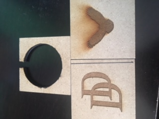

So for this project, we had to start out with printing stickers, which is why I printed the stickers in the first place. The first was a sticker that I ended up putting on my laptop.
So I made a sticker for my laptop. Next, we had to print two different monochrome stickers for a notebook that I will probably never use.


After the stickers came molds. First was a mold for candy.

I decided to just do my initials. The hardest part was figuring out how to get my initials onto the object itself. Every time I've used Autodesk in the past, I couldn't get text to get onto the objects I was printing. But I somehow got it done.
\Finally, I have a pewter mold for some sort of medallion. I don't know what I'll use it for, but it will be pretty cool since one side is of a hawk and the other is the DD of Daredevil.